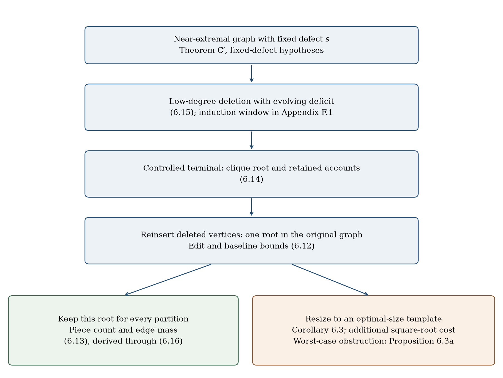
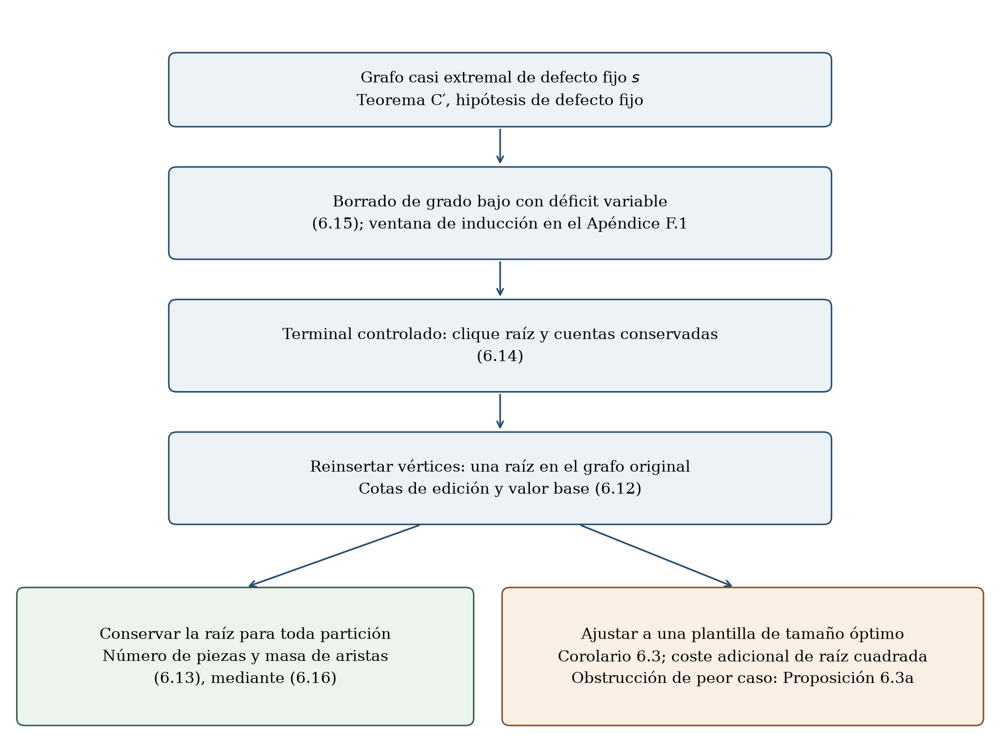

Clique partitions with rooted simplicial defect: quantitative stability and sharp eventual boundsParticiones de cliques con defecto simplicial enraizado: estabilidad cuantitativa y cotas agudas para órdenes grandes
Juan Pablo Traverso Gianini · Santiago, Chile · ORCID 0009-0003-6068-4096
What does the paper establish?¿Qué demuestra esta investigación?
We want to cover the edges of a graph with complete groups of vertices, using each edge exactly once. Paper IV bounds how many such pieces are needed for chordal graphs. It also asks a structural question: if a graph needs almost the largest possible number of pieces, what must the graph — and its efficient partitions — look like?
Queremos cubrir las aristas de un grafo mediante grupos completos de vértices, usando cada arista exactamente una vez. Paper IV acota cuántas piezas se necesitan para grafos cordales. También plantea una pregunta estructural: si un grafo necesita casi el máximo número posible de piezas, ¿cómo deben ser el grafo y sus particiones eficientes?
Here M(n) = ⌊n(n+1)/6⌋ and b is an absolute constant. The exact bound M(n) and the extremal maximum hold for sufficiently large n. The paper does not prove b = 0 at every order. Its extension treats fixed and sublinear rooted simplicial defect, with their different hypotheses kept separate.
Aquí M(n) = ⌊n(n+1)/6⌋ y b es una constante absoluta. La cota exacta M(n) y el máximo extremal valen para n suficientemente grande. La investigación no demuestra b = 0 para todo orden. La extensión trata el defecto simplicial enraizado fijo y sublineal, con sus distintas hipótesis separadas.
The extremal bound also appears in other proofs discussed in §8 of the manuscript. No priority for that bound is claimed. This page emphasizes the quantitative stability, control of partitions, explicit thresholds and the formal proof evidence of this development.
La cota extremal también aparece en otras demostraciones, comparadas en §8 del manuscrito. No se reclama prioridad sobre esa cota. Esta página destaca la estabilidad cuantitativa, el control de particiones, los umbrales explícitos y la evidencia formal de este desarrollo.
From a partition count to a shapeDel número de piezas a la forma del grafo
A clique is a set of vertices with every possible edge between them. A clique partition divides edges, not vertices: two pieces may share a vertex. A chordal graph has no induced cycle of length four or more. These definitions matter: neither an arbitrary graph nor an arbitrary vertex partition is covered by the chordal theorem.
Una clique es un conjunto de vértices con todas las aristas posibles entre ellos. Una partición en cliques divide aristas, no vértices: dos piezas pueden compartir un vértice. Un grafo cordal no tiene ciclos inducidos de longitud cuatro o mayor. Estas definiciones importan: el teorema cordal no se aplica a cualquier grafo ni a una partición de vértices.
The extremal shape is complete-split: a complete core R, an independent exterior, and every link between them. If the number of pieces needed is within δ of the extremal target, the stability theorem finds an actual clique R in the original graph. For large enough n and small enough δ relative to n², at most 16δ edge additions or deletions turn the graph into that complete-split shape.
La forma extremal es completo-split: un núcleo completo R, un exterior independiente y todos los enlaces entre ambos. Si el número necesario de piezas está a distancia δ del objetivo extremal, el teorema de estabilidad encuentra una clique real R del grafo original. Para n suficientemente grande y δ suficientemente pequeño respecto de n², a lo sumo 16δ adiciones o eliminaciones de aristas transforman el grafo en esa forma completo-split.
The root is chosen once, before a partition is supplied. The paper then controls every near-optimal partition relative to that same root. Requiring the core to have an exactly optimal size is a different task: an additional square-root term can be necessary, even when the graph is already complete-split.
La raíz se elige una sola vez, antes de recibir una partición. La investigación controla después toda partición casi óptima respecto de esa misma raíz. Exigir que el núcleo tenga un tamaño exactamente óptimo es una tarea distinta: puede requerir un término adicional de raíz cuadrada, incluso cuando el grafo ya es completo-split.


Statements, with their rangesEnunciados y sus rangos
Write cp(G) for the minimum number of clique pieces without an order restriction, and c₄(G) when every piece has at most four vertices. M(n) = ⌊n(n+1)/6⌋.
Escribimos cp(G) para el mínimo número de piezas sin restricción de orden, y c₄(G) cuando cada pieza tiene a lo sumo cuatro vértices. M(n) = ⌊n(n+1)/6⌋.
Theorems A and B · Chordal boundsTeoremas A y B · Cotas cordales
An absolute b works for every chordal graph and every n. There is an N such that, for n ≥ N, b can be omitted and the maximum over chordal graphs is exactly M(n), attained by complete-split examples even against unrestricted partitions.
Una constante absoluta b sirve para todo grafo cordal y todo n. Existe N tal que, para n ≥ N, se puede omitir b y el máximo sobre los cordales es exactamente M(n), alcanzado por ejemplos completo-split incluso frente a particiones irrestrictas.
Theorem 6.1 and Corollary 6.1a · Same-root stabilityTeorema 6.1 y Corolario 6.1a · Estabilidad con la misma raíz
For sufficiently large n, assume G is chordal, 0 ≤ δ ≤ γn² and c₄(G) ≥ M(n) − δ. One clique root R satisfies the following conclusions simultaneously:
Para n suficientemente grande, supongamos que G es cordal, 0 ≤ δ ≤ γn² y c₄(G) ≥ M(n) − δ. Una clique raíz R satisface simultáneamente estas conclusiones:
For every τ ≥ 0 and every unrestricted clique partition with at most M(n) + τ pieces, at most τ + 48δ pieces are noncanonical, and they contain at most 10τ + 480δ edges. Canonical pieces are root–exterior edges and triangles with two root vertices and one exterior vertex. The constants are not claimed optimal.
Para todo τ ≥ 0 y toda partición irrestricta con a lo sumo M(n) + τ piezas, a lo sumo τ + 48δ piezas son no canónicas y contienen a lo sumo 10τ + 480δ aristas. Las piezas canónicas son aristas raíz–exterior y triángulos con dos vértices en la raíz y uno en el exterior. No se afirma que las constantes sean óptimas.
Theorems C and C′ · Fixed rooted defectTeoremas C y C′ · Defecto enraizado fijo
For every induced vertex set U and every prescribed clique R properly contained in U, the rooted-defect condition requires a vertex outside R whose neighborhood in U becomes a clique after omitting at most s neighbors. For fixed s, the eventual order-four target is
Para todo conjunto inducido U y toda clique prescrita R propiamente contenida en U, la condición de defecto enraizado exige un vértice fuera de R cuyo vecindario en U sea una clique al omitir a lo sumo s vecinos. Para s fijo, el objetivo eventual con piezas de orden a lo sumo cuatro es
Theorem C strengthens the eventual upper bound of Okechukwu [15, Theorem 1.1] to pieces of order at most four. C′ provides same-root quantitative stability with explicit defect-dependent constants; the paper recovers the unrestricted equality family with attribution. Approximation by an optimal-size template requires a separate bound with an n√δ term (§6.6). These fixed-s constants are not substituted into a growing-s limit.
El Teorema C refuerza la cota superior eventual de Okechukwu [15, Teorema 1.1] a piezas de orden a lo sumo cuatro. C′ aporta estabilidad cuantitativa con la misma raíz y constantes explícitas dependientes del defecto; la investigación recupera la familia de igualdad irrestricta con atribución. La aproximación por una plantilla de tamaño óptimo exige una cota separada con un término n√δ (§6.6). Estas constantes para s fijo no se sustituyen en un límite con s creciente.
Section 6.7 treats sublinear defect separately: approximation and same-root stability along arbitrary sequences of orders tending to infinity. A uniform exact band is also proved, but it does not give the exact target for every sublinear defect sequence. Consult the manuscript for the full sequence hypotheses and threshold comparisons.
La sección 6.7 trata por separado el defecto sublineal: aproximación y estabilidad con la misma raíz a lo largo de sucesiones arbitrarias de órdenes que tienden a infinito. También se demuestra una banda exacta uniforme, pero no da el objetivo exacto para toda sucesión de defecto sublineal. Las hipótesis completas y las comparaciones de umbrales están en el manuscrito.
How the pieces fitCómo se enlazan los pasos
Replacing individual edges by a triangle saves two pieces; replacing six edges by a K₄ saves five. A mixed fractional packing distributes these choices under capacity one per edge. Let W* be its optimal gain, F₄ = e − W*, and g(P) the gain of a physical edge-disjoint packing.
Reemplazar aristas individuales por un triángulo ahorra dos piezas; reemplazar seis aristas por un K₄ ahorra cinco. Un empaquetamiento fraccional mixto distribuye esas elecciones con capacidad uno por arista. Sean W* su ganancia óptima, F₄ = e − W* y g(P) la ganancia de un empaquetamiento físico disjunto por aristas.
This is an accounting identity, not a construction. It says that rounding loss must fit within the available margin. The proof supplies constructions in two alternative regimes, not two consecutive stages:
Es una identidad de cuentas, no una construcción. Indica que la pérdida de redondeo debe caber en el margen disponible. La prueba aporta construcciones en dos regímenes alternativos, no en dos etapas consecutivas:
| RegimeRégimen | MechanismMecanismo | Where to readDónde leerlo |
|---|---|---|
| Far from extremalLejos del extremo | RC01 mixed rounding; a quadratic margin absorbs the subquadratic loss.Redondeo mixto RC01; un margen cuadrático absorbe la pérdida subcuadrática. | §3, Appendix / Apéndice C |
| CriticalCrítico | Descent locates a root; the H1/RD09 constructor realizes compatible triangles and retains the defect accounts.El descenso localiza una raíz; el constructor H1/RD09 realiza triángulos compatibles y conserva las cuentas del defecto. | §§4–5 |
| Structural consequencesConsecuencias estructurales | The retained accounts give graph and partition stability, rather than only the final piece count.Las cuentas conservadas dan estabilidad del grafo y sus particiones, no sólo el número final de piezas. | §§6.5–6.7, Appendices / Apéndices E–F |
Place in the series and the literatureLugar en la serie y en la literatura
Paper I contributes fractional profile and rational infrastructure; Paper II studies the fractional chordal extremum and chordal structure; Paper III supplies integral split constructions and the nibble infrastructure adapted here. The chordal critical construction uses descent rather than selecting a first-entry index. The extension explicitly attributes the signed-star method to [15, Lemma 3.1] and chordal removal to de Joannis de Verclos [22]. The manuscript distinguishes reuse of mathematical methods from dependence on unproved formal interfaces.
Paper I aporta perfiles fraccionales e infraestructura racional; Paper II estudia el extremo fraccional cordal y la estructura cordal; Paper III aporta construcciones integrales split y la infraestructura de nibble adaptada aquí. La construcción crítica cordal usa descenso en lugar de elegir un índice de primera entrada. La extensión atribuye explícitamente el método de estrella con signos a [15, Lema 3.1] y la remoción cordal a de Joannis de Verclos [22]. El manuscrito distingue reutilizar métodos matemáticos de depender de interfaces formales no demostradas.
What has been checked?¿Qué se ha verificado?
The unchanged Lean source cut is piv-v12-fb459343d234, using Lean and Mathlib 4.28.0. The recorded external build covers 607 main modules, 19 explicit targets and 224 export checks, plus a separate 50-module annex. The checked axiom footprints contain only propext, Classical.choice, Quot.sound or subsets, not unproved project theorem interfaces. Lean and Mathlib remain dependencies.
El corte Lean sin cambios es piv-v12-fb459343d234, con Lean y Mathlib 4.28.0. El build externo registrado abarca 607 módulos principales, 19 objetivos explícitos y 224 controles de exportación, más un anexo separado de 50 módulos. Las huellas verificadas contienen sólo propext, Classical.choice, Quot.sound o subconjuntos, no interfaces de teoremas del proyecto sin demostrar. Lean y Mathlib siguen siendo dependencias.
Keep the versions distinct. The consolidated external verdict is PASS for v1.22-r4. Version 1.23 moves administrative history out of the manuscript and adds this explainer; its documentary checks are separate. It does not claim a new external audit or a new Lean build. The audit discloses a same-family model, a continued audit session and a shared machine/cache. It is not human peer review.
Las versiones se distinguen. El veredicto externo consolidado es PASS para v1.22-r4. La versión 1.23 traslada el historial administrativo fuera del manuscrito y añade esta explicación; sus controles documentales son separados. No afirma una nueva auditoría externa ni un nuevo build Lean. La auditoría declara un modelo de la misma familia, una sesión de auditoría continuada y equipo/caché compartidos. No es revisión humana por pares.
Explicit does not mean practical: the global thresholds are tower-type. The theorem does not supply a fast algorithm, prove a universal linear fractional–integral gap, or settle b = 0 at every order. Finite computational tests are checks, not substitutes for the universal proofs.
Explícito no significa práctico: los umbrales globales son de tipo torre. El teorema no aporta un algoritmo rápido, no demuestra una brecha fraccional–integral lineal universal ni resuelve b = 0 para todo orden. Las pruebas computacionales finitas son controles, no sustitutos de las demostraciones universales.